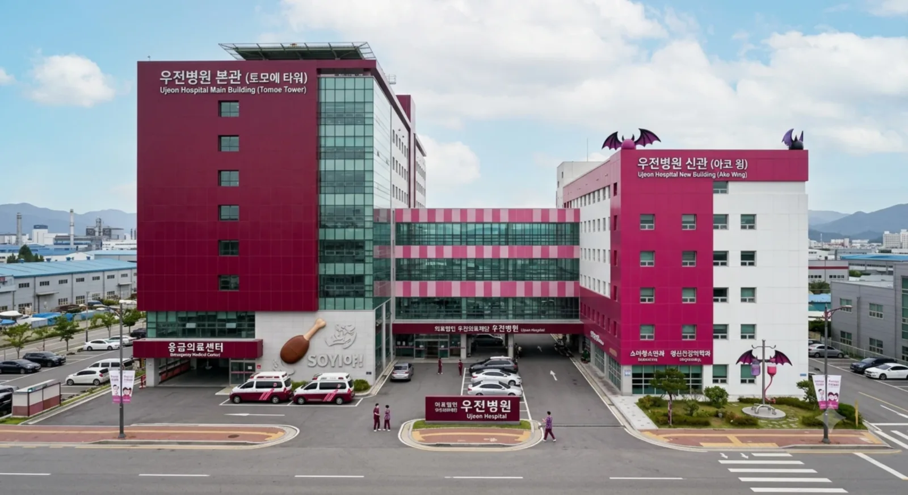

[우전병원 전경]| 명칭 | 의료법인 우전의료재단 우전병원 |
|---|---|
| 개원 | 1966년 4월 15일 |
| 종별 | 종합병원 |
| 병원장 | 우다가와 켄 (의학박사·정형외과 전문의) |
| 명예 홍보대사 | 우다가와 토모에 · 우다가와 아코 |
| 소재지 | 효빈광역시 청엽구 마잡동 732 (법정동: 서증동) |
| 병상 수 | 620병상 |
| 대표 전화 | 079-741-0415 |
| 웹사이트 | 우전병원 공식 홈페이지 |
효빈광역시 청엽구 남동부 권역의 응급의료 및 중증 정형외과 질환을 책임지는 거점 종합병원.
서구에 초거대 공룡인 효빈대학교병원이 버티고 있다면, 청엽구 공단 배후지와 마잡·서증지구 주민들의 골든타임은 사실상 이 병원이 멱살을 잡고 하드캐리하고 있다. 1960년대 개원 이래 60년이 넘는 세월 동안 청엽구 동부의 의료 축을 담당해 온 뼈대 있는 병원이다.
하지만 이 병원의 가장 유니크한 정체성은 '이름값을 심각하게 못 하는 막장 위치'와 '광기 어린 우다가와 자매 유니버스'에 있다.
가장 헷갈리기 쉬운 부분인데, 사실 병원의 명칭인 '우전'은 현재의 행정구역인 우전동에서 따온 것이 아니라, 개원 당시 병원 부지 근처를 도심을 관통하며 흐르던 [우전천(宇田川)]의 수계에서 이름을 따온 것이다. 이 때문에 수십 년 전 병원을 마잡동(서증동)으로 통째로 확장 이전했음에도 불구하고, 역사성을 유지한답시고 60년 넘게 '우전병원'이라는 간판을 당당히 달고 있다. 그리고 이것이 수많은 택시 기사들과 초행길 환자들을 낚는 거대한 함정 카드로 진화하고 말았다.
본래 1966년 4월 15일, 당시 청엽면의 중심지였던 오리지널 우전동 택지 초입에 '우전의원'이라는 이름으로 역사적인 첫 발을 내디뎠다. 이때는 지명과 이름이 완벽히 일치하는 상식적인 병원이었으며, 주말마다 몰려드는 락커들과 공단 인부들의 부러진 뼈를 맞춰주며 청엽구 최고의 정형외과 명가로 포효했다.
2000년대 초반 들어 우전지구의 인구가 폭발하고 근처 헌이송공업단지에서 유입되는 외상 환자들이 감당 불가능한 수준에 이르자, 재단 측은 과감히 병원 확장을 결단했다. 그러나 당시 이미 빌딩숲이 되어버린 우전동 부지에서는 도저히 증축 각이 나오지 않았다.
결국 재단은 2003년, 마잡2동 관할이자 상대적으로 부지가 널널했던 구석탱이 법정동 서증동 땅을 통째로 매입하여 지하 3층, 지상 12층 규모의 현대식 대형 병동을 올리고 본원을 전면 확장 이전했다.
인테리어부터 와인색(#BB0033)과 진분홍색(#DD0088)이라는 정신 나간 패치워크 조합으로 눈을 번쩍이게 만든다.
우전병원은 열혈과 다크니스(?)가 공존하는 독창적인 의료진 라인업을 갖추고 있다. 우다가와 자매의 기질을 고스란히 물려받아 진료실이 밴드 합주실처럼 시끄럽고 활기찬 것이 특징이다.
여러 번의 무리한 증축으로 동선이 드럼 세트처럼 복잡하게 꼬여 있어 '서증동 던전'이라고 불린다.
이름에 낚여 우전역에 내리면 절대 안 된다! 실제로는 마잡동·서증동 라인에 박혀 있다.
효빈광역시 안천구나 중구에서 술에 취한 승객이 택시를 타고 "기사님, 우전병원 가주세요"라고 하면, 기사들이 백이면 백 옆 동네 우전동 우전역 앞에 내려주는 대참사가 60년째 반복 중이다. 환자가 내린 뒤 "아니 여기가 왜 우전역이야 서증동으로 가야지!"라며 뒷목을 잡고 택시 기사와 피 튀기는 쌍욕 배틀을 벌이는 광경은 청엽구의 유구한 전통적 일상이다. 이 때문에 단골 환자들은 무조건 "마잡동 서증공단 쪽 우전병원요"라고 목적지를 칼같이 말한다.
우전역 드럼 연습실 예약에 실패한 오타쿠들이 "우전병원은 어차피 방음이 잘 된다"며 신관 재활센터에 환자인 척 위장 입원해서 야간에 드럼을 두들기다 수간호사에게 발각되는 촌극이 주기적으로 일어난다. 수간호사는 드럼 스틱을 뺏은 뒤 그걸로 오타쿠의 대가리를 사정없이 스매싱하며 "여기가 라이브하우스냐 바보들아!"라고 호통쳐 쫓아내는 것이 국룰이다.
매년 4월 15일(토모에 생일 겸 개원기념일)과 7월 3일(아코 생일)에는 외래 접수처 직원들이 전부 보라색과 와인색 코스프레 가운을 입고 근무한다. 내원하는 모든 환자에게 피망이 절대 들지 않은 '심연의 샌드위치'와 삶은 달걀을 조공하는 눈물겨운 대축제가 거행되며, 이 날만 되면 젤리빈과 포테이토칩을 공짜로 받으려는 동네 꼬마들로 병원 로비가 마비된다.
여름 장마철, 국지성 호우로 인해 병원 뒤편을 흐르는 우전천의 수위가 급격히 상승해 지하 주차장 침수 위기가 닥쳤다. 병원장 우다가와 켄은 비상벨을 울리고 전 직원과 경증 입원 환자(?)들까지 동원해 모래주머니 쌓기 작전에 돌입했다. 놀랍게도 "소이야! 소이야!"라는 찰진 드럼 비트 구령에 맞춰 수백 명이 일사불란하게 모래주머니를 릴레이로 나르는 기적이 벌어졌고, 단 20분 만에 완벽한 방어벽이 구축되어 병원을 수마로부터 구해낸 전설의 수해 방어전이다.
자타공인 뱅드림 성덕인 박효빈 시장이, 우전병원에 입원한 지역구 인사를 비밀리에 병문안 가기 위해 밤에 택시를 탔다. "기사님, 빨리 우전병원으로 가주세요!"라고 외친 뒤 피곤함에 잠들었다 깨어보니, 택시는 당연하게도 진짜 '우전동 우전역' 앞에 멈춰 있었다. "아니, 이 기사 양반아! 우전병원은 마잡동에 있다고 백 번 말했잖아!"라며 핏대를 세운 박 시장은, 도로가 꽉 막히자 결국 꽃바구니를 들고 서증동까지 무려 3km를 정장 차림으로 전력 질주하는 분노의 마라톤을 펼쳤고 이 모습이 블랙박스에 찍혀 에타를 달궜다.
근처 공단에서 집단 식중독이 터져 야간 응급실에 수십 명의 환자가 동시에 몰려드는 아수라장이 발생했다. 과부하가 걸린 응급실에 소아과장 최아코가 급파되었다. 그녀는 중2병 콘셉트를 발휘해 "이 녀석의 체내에 깃든 어둠(독소)의 농도가 가장 짙다! 레벨 5의 마기가 느껴진다! 우선 격리하라!"라며 환자들의 얼굴색과 바이탈을 귀신같이 읽어내어 완벽한 중증도 분류(트리아지)를 해냈다. 간호사들은 "콘셉트가 미치긴 했는데 분류 속도가 빛의 속도"라며 감탄을 금치 못했다.
원내 절대 반입 금지 물품인 '피망과 해삼' 룰을 어기고, 한 며느리가 입원한 시어머니의 원기 회복을 위해 특제 '해삼 볶음밥과 피망 고추잡채'를 보온병에 담아 몰래 반입하려 했다. 그러나 신관 1층 로비 검색대를 통과하던 중, 영양관리실장 정라멘의 후각 레이더에 정확히 포착되었다. "코드 레드! 심연을 더럽히는 금단의 식자재가 감지되었다!"라는 경고 방송과 함께 보안 요원들이 출동해 보온병을 압수했고, 며느리는 졸지에 해삼 밀수범으로 몰려 병원장실에서 훈방 조치되는 대소동이 벌어졌다.
심한 몸살감기와 식욕 부진으로 일주일째 앓아누운 고등학생 환자가 병원 밥을 다 남기자, 우다가와 켄 원장이 직접 병실을 찾아와 처방전을 썼다. 처방전에는 약 이름 대신 '특제 돈코츠 쇼유 라멘 1그릇 (챠슈 추가, 파 듬뿍)'이 적혀 있었다. 반신반의하며 지하 식당에서 뜨끈하고 진한 라멘 국물을 원샷한 학생은, 그 자리에서 땀을 한 바가지 흘리더니 "어라? 콧물이 멈추고 힘이 납니다!"라며 다음 날 멀쩡하게 퇴원했다는 전설의 돼지국밥급 힐링 썰이 전해진다.
교통사고로 가벼운 뇌진탕을 일으켜 3일째 의식을 잃고 무기력증에 빠져 있던 환자가 있었다. 마침 옆 침대에서 정형외과 물리치료 팀이 탈구된 환자의 어깨를 맞추기 위해 "원, 투, 쓰리, 포! 소이야! 소이야!!"라며 천장이 떠나갈 듯한 우렁찬 기합과 타격음을 울려 퍼뜨렸다. 그 엄청난 데시벨과 16비트 드럼 엇박자 리듬의 진동에 뇌세포가 자극받은 환자가, 갑자기 눈을 번쩍 뜨더니 허공에 대고 에어 드럼을 치며 깨어나는 기적이 일어났다. 학계에서는 이를 '우전식 타악기 충격파 각성 요법'이라 부르며 경악을 금치 못했다.